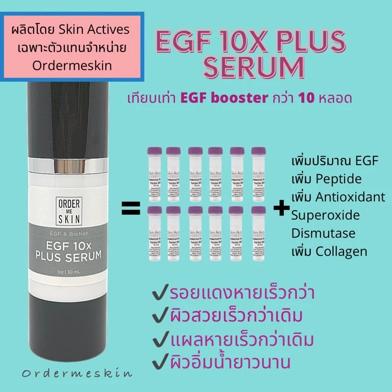

🧴 เซรั่มบำรุงผิวด้วยเทคโนโลยีชีวภาพ / Sérum de soin à base de biotechnologie

ผลิตภัณฑ์เซรั่มสูตรเข้มข้น เหมาะสำหรับผู้ที่ต้องการบำรุงผิวหน้าให้ชุ่มชื้น ลดเลือนริ้วรอย และฟื้นฟูเซลล์ผิว
Ce sérum innovant utilise des ingrédients biotechnologiques pour hydrater, lisser et régénérer la peau en profondeur.
💡 เหมาะสำหรับ : ผู้ที่มีปัญหาริ้วรอย รอยสิว ผิวแห้ง
💡 Idéal pour : rides, taches, peau terne ou déshydratée
🛒 สั่งซื้อที่นี่ / Acheter maintenant :
👉 คลิกที่นี่เพื่อดูสินค้าใน Shopee / Voir le produit sur Shopee